Speedcubing Guide
A guide on how to solve the cube in seconds with the CFOP method
So you've gone through the beginner's method a few times. Maybe you're even getting pretty good, and can consistently do it in under 2 minutes. But now you're hooked. You want to be one of those people, who can just look at a cube, and ten seconds later boom, it's done. Well here is where your journey begins.
This guide takes you through every step of the CFOP speedcubing method. The name CFOP comes from the steps involved (Cross, First 2 Layers, Orientation of Last Layer, Permutation of Last Layer), and you may also see it referred to as the Fridrich method (after Jessica Fridrich, who helped turn it into the most popular speedcubing technique). Learning and practising this method can take you all the way to the top of the game - it is used by a lot of the top speedcubers to set world records, including the current staggeringly low time of 2.76 seconds.
Cross
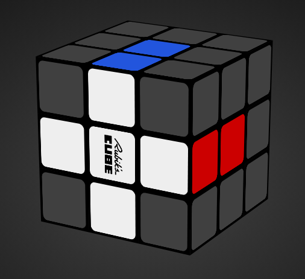
Hold your cube in your hands with the white centre facing down to improve your solution time. With a lot of practice you won't need to see the white cross because you will know what's going on down there according to the color scheme of your puzzle, your moves and what you see on the top. This way you don't have to turn your cube around, saving this way a lot of time. Some speedcubers prefer solving the cross on the left side but if you choose to make it on the bottom you'll have a nice lookahead and is more suitable for finger tricks. The only bad thing is that it's weird for beginners and you can't notice in time if you messed the cross up.
It would be more intuitive to solve it on the top and turning upside down when it's done, but you'll need to learn it this way if you want to reach times below 20 seconds. To encourage you I have to tell that the knowledge of the next step (F2L) will help you a lot in the understanding of the manipulation of the cube upside down. You will discover the advantages of this perspective and you will admit that this is the best way of doing it. And if you really want to master the Rubik's Cube I recommend you to examine the cube and try to plan all the necessary steps and execute them without watching.
Example Cases
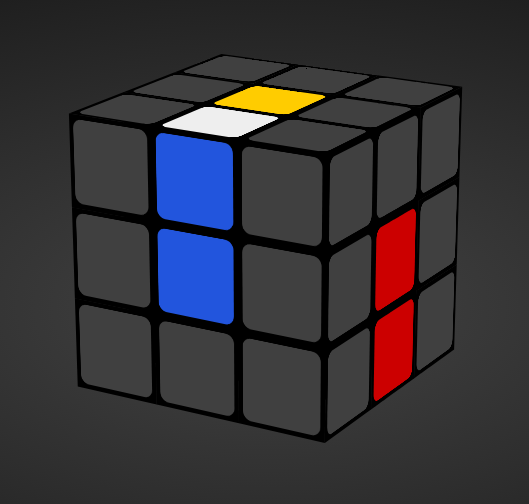
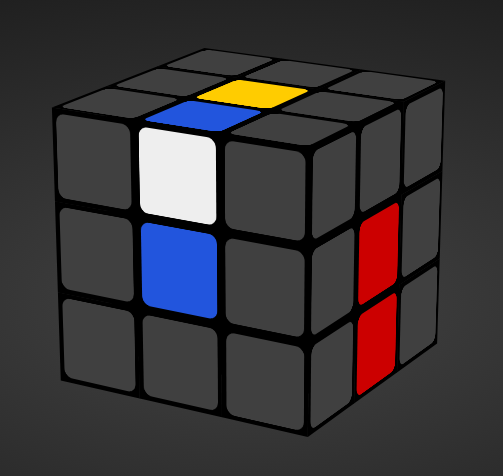
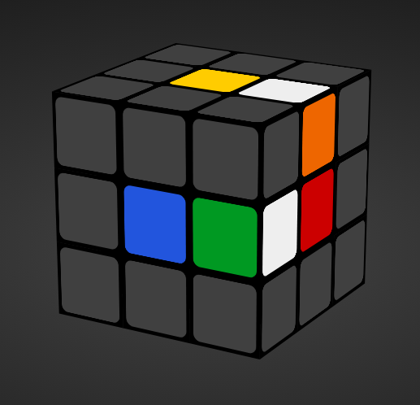
First Two Layers (F2L)
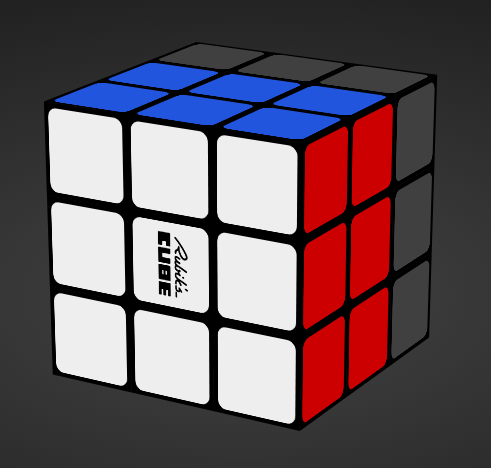
The first two layers (F2L) of the Rubik's Cube are solved simultaneously rather than individually, reducing the solve time considerably. In the second step of the Fridrich method we solve the four white corner pieces and the middle layer edges attached to them. The 41 possible cases in this step can be solved intuitively but it's useful to have a table of algorithms printed on your desk for guidance.
To be efficient try not to turn your cube around while solving and look ahead as much as possible. Familiarize with the algorithms so you can do them even with your eyes closed. Here are two simple examples:
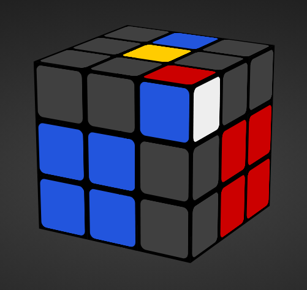
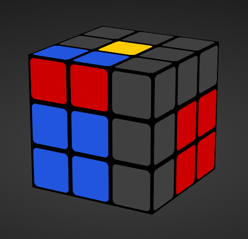
The corner piece is paired with the edge piece, and the pair is inserted into the right place. Easy peasy. There are, however, a few situations you might find yourself in where this procedure is not quite so obvious. Here's a similar example:
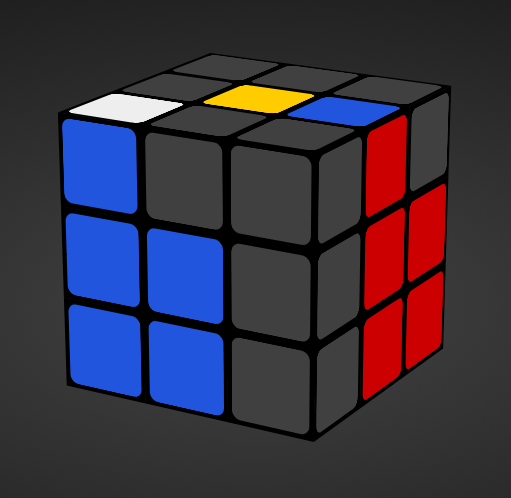
This can't be solved as simply, but the idea is exactly the same. The two sections of the algorithm show the two steps in the same procedure as before - the first bracketed section shows the pairing of the two cubies, and the second section shows the pair being inserted correctly. You simply repeat these steps for each of the four corners, and solve each F2L pair in turn.
Rather than relying on a big table of algorithms, F2L is best done intuitively. This is for the same reason as the cross in step 1 - you need to be able to look at the cube and produce an efficient way of solving each F2L pair. Just like with the happy red-green pieces before, sometimes you will come to an F2L situation that you've solved many times, but solve it in a different way because you want to set up the next F2L pair for easy solving.
However, there are resources on where you can see each F2L case and how to solve it. They are there so you can see an optimal way to solve each case, but try to not rely on them for every single F2L case you encounter. Instead, really try and solve each case intuitively. Don't worry if you struggle! It takes practice, and the next little section is all about how to be better at F2L.
Edge Orientation of Last Layers (EOLL)
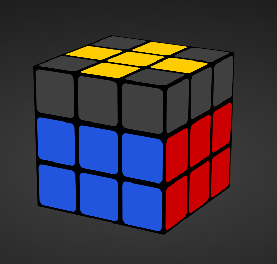
Now, when you're solving the cube using the full CFOP method, the whole last layer is supposed to be solved in two steps: OLL and PLL.
These steps are solved using only one algorithm each. So the first algorithm orients all the last layer pieces (makes them all face the right way, i.e. with yellow on top) and the second permutes them (puts them all in the right places). 'Orientation' always refers to the way a cubie is rotated, and 'permutation' always refers to where it is on the cube. As you might well imagine, this means that full CFOP has a lot of algorithms in it - one for every situation you might encounter. And every situation actually has multiple algorithms for your learning pleasure.
So instead, I'm going to show you a slightly different way of approaching the last layer, so that you only need to know a few algorithms instead. Then, once you know those few algorithms, you can begin to learn the rest of the last layer algorithms while always being able to fall back on the ones you know. What's even better is that these few algorithms are used in the full CFOP method anyway, so we're not wasting any time!
The way it works is to split up the steps into two smaller steps each. So for OLL, instead of orienting every piece in the last layer at once, we'll do the edges first and then the corners. This is called 2-look OLL, as it's OLL but done in two steps. Makes sense. PLL gets the same treatment, as we'll be permuting the corners first and then the edges. That's called 2-look PLL.
Here are the algorithms to solve the edges. Luckly, there are only 3 cases!
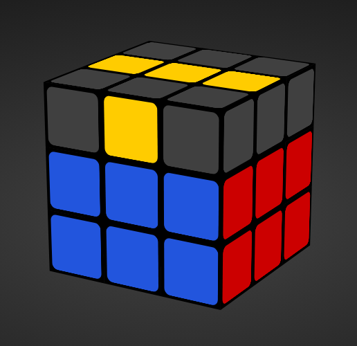
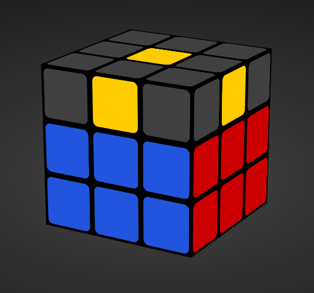
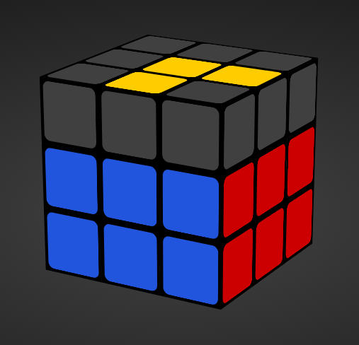
Corner Orientation of Last Layer (OCLL)
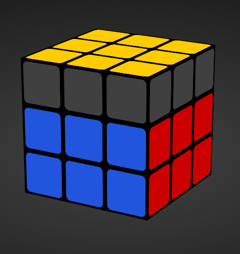
Just like the beginner guide, the rest of the last layer isn't an intuitive thing you can just work out (if you can, you and your mega-brain should probably be working for NASA or something). That's why there's a big scary table of algorithms lurking on the algorithms page, but because we're using our clever 2-look shortcut, you only need to know the following seven. They don't look scary at all, and there's even some triggers in there that you've already seen!
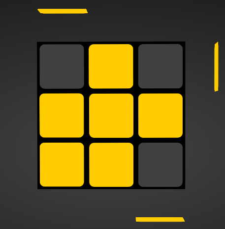
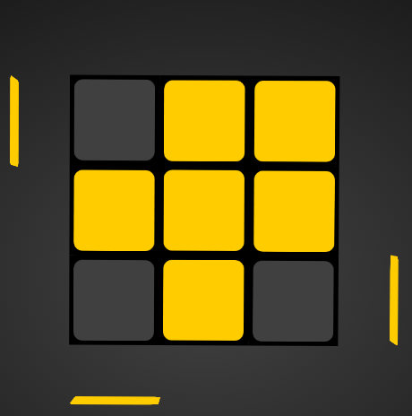
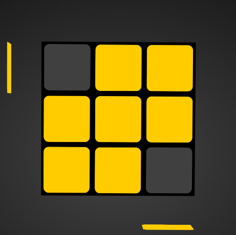
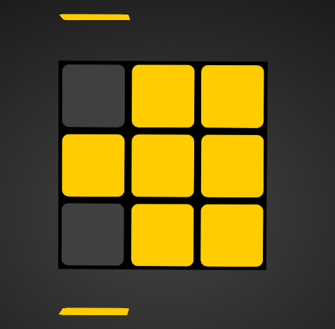
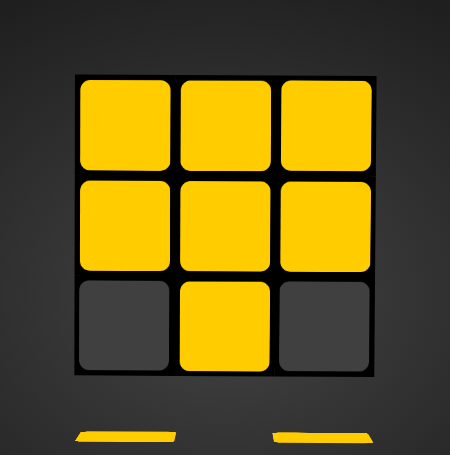
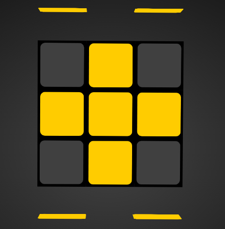
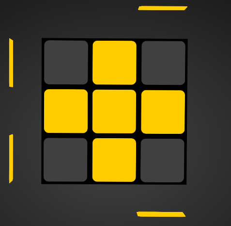
Corner Permutation of Last Layers
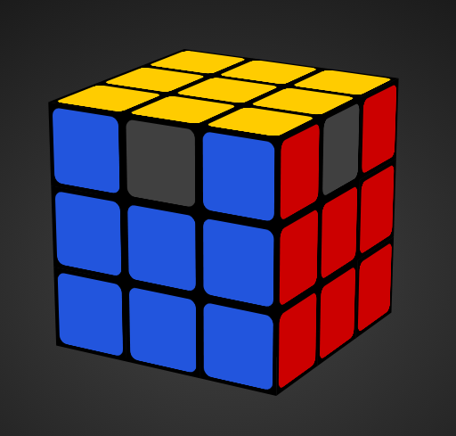
First, you need to look for 'headlights' - a face where both top layer corners are the same colour. In the following example, you can see that the 'headlights' are on the Front face, as the top layer corners are both blue.
First, you need to look for 'headlights' - a face where both top layer corners are the same colour. In the following example, you can see that the 'headlights' are on the Front face, as the top layer corners are both blue.
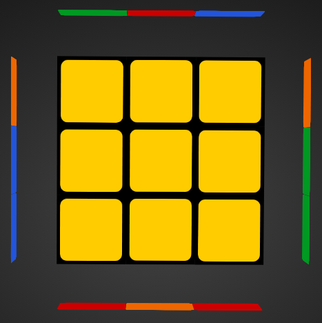
You then hold the headlights so they are facing to the right, and perform this algorithm:
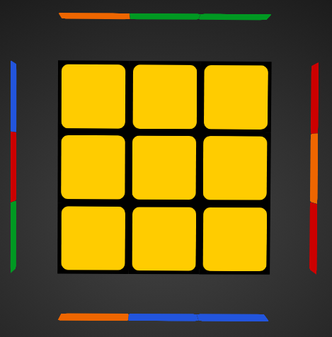